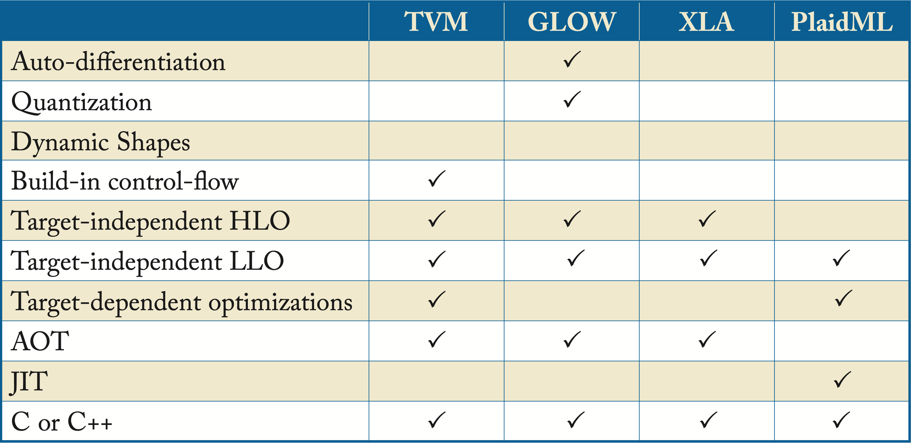
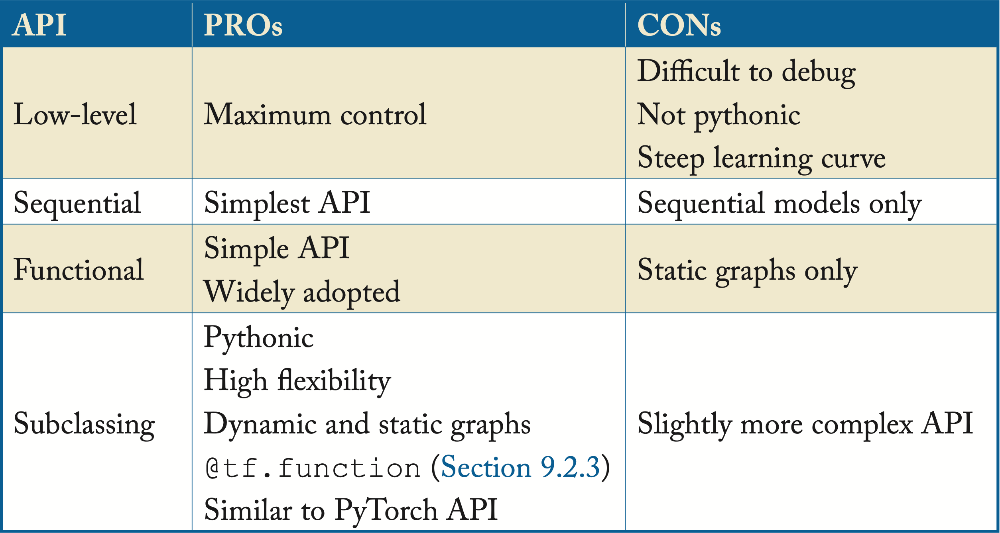
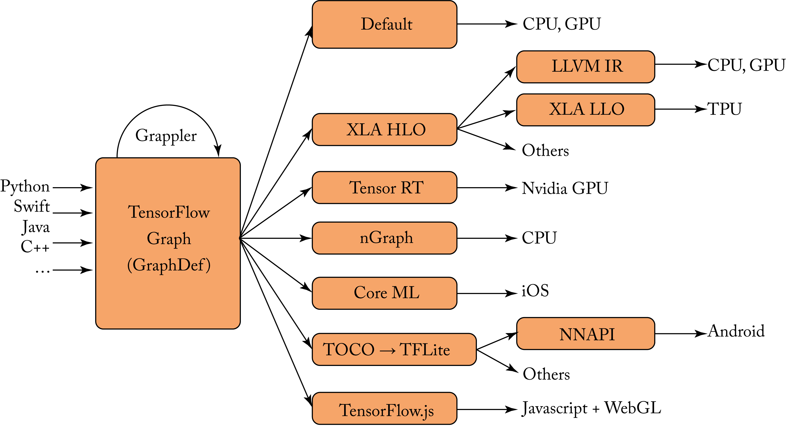
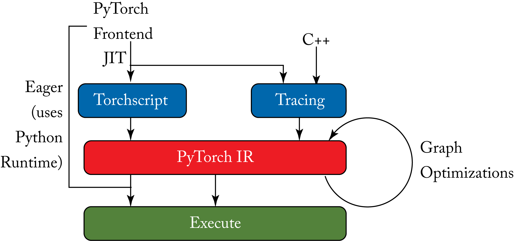
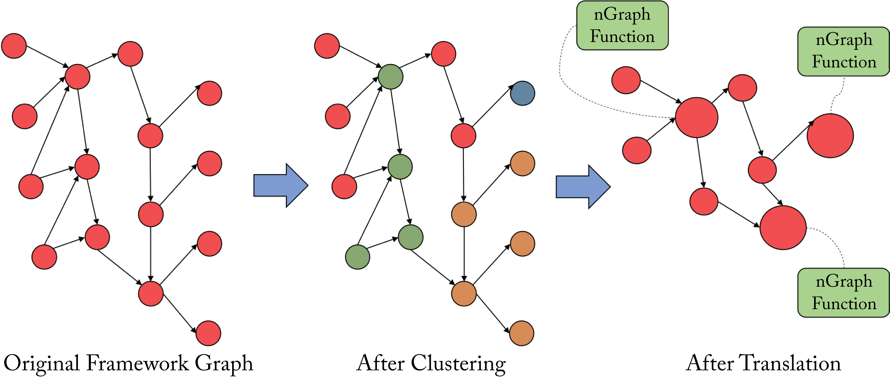

Chapter 9: Frameworks and Compilers
A framework has multiple types of compilers: the computation graph optimizer, the primitive libraries JIT to select the best schedule, the code generation path for operations not supported by the primitive libraries, and the other DL compilers covered in Sections 9.4-9.10. A computation graph is a high-level graph that represents the computations, data flow, and control-flow of a DL program (a model). Each node typically corresponds to a tensor operator (op), such as conv2d, GEMM, or sigmoid. Some nodes represent control-flow operators to enable conditional branches and loops on different parts of the computation graph. The edges represent the data flow and tensor dependencies between operators, as illustrated in Figure 1.5. A tensor is a multidimensional array; a scalar, vector, and matrix are 0D, 1D, and 2D tensors, respectively. 3D, 4D, and 5D tensors are also common.
In the DL compiler literature, the terms expression, primitive function, and compute kernel are often used interchangeably, with kernel primarily used as a synonym for convolutional filter. The order of transformations and other operations to execute a primitive is called a schedule. An expression consists of operands and operators. The operands are the tensor inputs and outputs of the primitive function. An example is the sigmoid expression composed of a division, an addition, and an exponentiation operator: \(\sigma(x) = \frac{1}{1 + e^{-x}}\). Given the frequent use of this particular expression or pattern of operators, it is beneficial to fuse them into a single sigmoid operator to reduce memory accesses, as explained in Section 8.4.
Frameworks, such as TensorFlow and PyTorch, implement over a thousand of operators for x86 CPUs and Nvidia GPUs. TensorFlow and PyTorch have built-in graph optimizers (Grappler in TensorFlow; JIT in PyTorch (no fancy name)) and a scheduler to execute the computation graphs. The scheduler (also known as execution runtime) dispatches each tensor operation to a precompiled target-specific implementation available in a primitive library if the library supports the operator. Frameworks also have a code generation path to supplement these libraries, such as through LLVM.
Low-level libraries, such as oneDNN, cuDNN, ROCm MIOpen, Eigen, OpenBLAS, GotoBLAS, and BLIS, provide optimizations to standard DL or basic Math functions (such as those introduced in Chapter 2) for a particular ISA. Intel and Nvidia work with the framework maintainers to co-optimize the framework's built-in graph optimizer and integrate the APIs of their respective primitive libraries.
Inference engines (IE) are inference-only frameworks. They are used to optimize and deploy already-trained models. IEs are leaner than the main frameworks focusing on inference-only graph-optimizations. While the frameworks have mostly consolidated to TensorFlow (TF) and PyTorch, the number of inference engines is slowly growing. Some of the prominent IEs are as follows:
-
TensorFlow Lite for Android, iOS, and Raspberry Pi devices.
-
TensorFlow.js for JavaScript environments, such as a web browser and Node.js.
-
OpenVINO for x86 CPUs, and Intel's GPUs, FPGAs, and Movidius VPUs (used for edge devices).
-
TensorRT for Nvidia's GPUs.
-
ONNX Runtime (ONNX RT) for ONNX models, used by Microsoft and gaining adoption elsewhere. It uses OpenVINO, TensorRT, MLAS, and other back-end libraries. Microsoft is expanding ONNX RT to support training as a main framework.
-
AWS Neuron for TensorFlow, PyTorch, and MXNet models running on AWS Inferentia-based instances.
-
Neural Magic for x86 CPUs.
-
TensorFlow-Serving for large-scale data center deployment of TF models. TF-Serving provides a layer over TF to handle inference requests over networks, and uses TF for the inference, so in this respect is not faster or leaner than TF.
-
TorchServe for efficient end-to-end inference of PyTorch models. TorchServe provides a layer over PyTorch, similar to TF-Serving with TF.
A limitation of most IEs and ONNX models is that they do not provide all the inference functionalities and operators that the frameworks have. To mitigate this, most IEs have mechanisms to extend their functionality. Some IEs are integrated with a framework so that operators not supported by the IE fall back to the framework. For instance, TensorRT is integrated as a back-end runtime executor in TensorFlow. However, this increases the size of the inference software package and may not be practical in edge devices.
The current approach to train and deploy models is to use frameworks or inference engines with built-in graph optimizers and rely on libraries for target-dependent optimizations to standard primitives. The combination of \(F\) frameworks, \(M\) microarchitectures (hardware targets), \(P\) primitives, \(S\) schedules per primitive (a primitive function may have different schedules depending on the size of the operands), and \(D\) different numerical formats has an implementation cost in the order of \(O(\mathit{FMPSD})\).
This engineering approach is not scalable. It is a nontrivial engineering effort to optimize each combination. Also, the optimizations have to be upstreamed into each of the popular frameworks or the primitive libraries. Even standard primitives, such as convolution and LSTM, can have different optimization strategies. For instance, the optimal schedule for convolution depends on the batch size, the filter size, the number of channels, and the algorithmic implementation, such as direct, FFT, or Winograd (introduced in Section 2.3). Dispatching between these algorithms to pick the best performing one for a particular shape is a nontrivial task. Also, LSTM units can have different variants, each one requiring a unique optimization strategy.
An additional challenge with the current approach is that a graph optimization may suggest fusing two primitives to reduce memory access overhead. However, the fused primitive may not be optimized in the primitive library. The challenge to engineer optimized primitives is compounded by (1) the wave of DL hardware being developed, each with a unique microarchitecture, computational paradigm, and memory hierarchy and (2) the heterogeneous design of modern devices. A single device, such as a modern mobile phone, may have a CPU, GPU, DSP, ASIC (for matrix multiplications), and IPU (for image and video decoding).
DL system engineers at hyperscalers typically write code across all levels of the software stack. The cost of adopting a new hardware architecture may be prohibitive if it requires rewriting the code to run on the new hardware and, worse, if it requires learning a new programming language. There is a market to automate whole-program optimizations to reduce this cost, and startup companies, such as OctoML, Neural Magic, DeepCube, and OnSpecta, are offering optimizations as a service.
The overarching goal of graph compilers is to automatically generate efficient code for a diverse set of workloads and across different hardware targets that execute at similar or better efficiency to one manually optimized. The compiler lowers a model from the framework representation to a canonicalized high-level domain-specific IR. It then performs a series of target-independent optimizations passes, such as operator fusion, and eliminating unnecessary expressions (as discussed in Section 8.4). The optimized IR is functionally equivalent to the IR before the optimization passes. The compiler then lowers the optimized high-level IR to a low-level IR with limited to no control-flow and performs a series of target-dependent optimization passes, such as additional fusion passes, and data layout transformations. These passes aim to use the memory hierarchy and compute available efficiently. The compiler then either generates executable code for the back-end target or passes the optimized low-level IR to a target-specific compiler, such as an LLVM back-end compiler, to generate executable code.
The main challenge compiling expressions (primitives) is to constrain the space of functionally-equivalent schedules for each expression for a particular hardware target so that an efficient schedule for each expression is quickly selected. The space of schedules is enormous for each expression and hardware target pair. Finding the optimal schedule is an NP-complete problem with potentially billions of choices for a single expression. RL and ML techniques can improve DL compilers. One example is AutoTVM, discussed in Section 9.4. Note that passing contextual information from the high-level IR to a low-level IR can limit the search space. However, the low-level IR typically does not contain contextual information.
Another challenge is optimizing dynamic graphs, which are graphs with arbitrary allocations (variable input lengths), control-flows, iterations, and recursions [YAB+18]. Static computation graphs work well for directed acyclic graph (DAG) models with a fixed number of layers and dimensions per layer, such as ResNet-50. However, modern NLP, computer vision, and RL models, as well as recursive NNs and GNNs, have dynamic graphs with variable length inputs.
Most graph compilers have limited support for dynamic models. There are three primary methodologies to represent and use dynamic models with dynamic inputs and control-flow. First, compiling and caching multiple static graphs for different inputs, and selecting the best static graph at runtime. The programmer can provide lower and upper bounds on the input parameters to reduce the number of static graphs generated. Second, eliminating control-flow by unrolling loops or duplicating nodes at the expense of increasing the program's size and, hence, the memory requirements. Third, executing the control-flow in the (slower) Python interpreter, such as with PyTorch imperative mode (note that PyTorch JIT generates control-flow and data flow for declarative mode).
Frameworks and compilers should support these features:
-
High- and low-level optimizations that are reusable across front-end frameworks and back-end targets.
-
Strongly-typed tensors; that is, tensors with a known static shape and element type, such as \(fp32\), \(fp16\), \(bf16\), \(s8\), \(u8\), or \(\mathit{bool}\).
-
Common tensor expressions, such as matrix multiplications, convolutions, element-wise activations, broadcast, reductions, and index transformations (such as reverse and concatenation).
-
Fallback on the default implementation for subgraphs or expressions not supported by the compiler.
-
Static graphs with placeholders for the tensor operands.
-
Dynamic shapes.
-
AOT and low-overhead JIT compilation (such as JIT without LLVM).
-
Runtime executor for parallelism to concurrently execute subgraphs across threads or devices.
-
Auto-differentiation and mathematical optimizers, such as SGD, for training.
-
Collective communication primitives (AllReduce, AllGather, AllToAll, Broadcast) for distributed training.
The most prominent DL compilers (outside of the frameworks' built-in graph optimizers) are TVM, XLA, Glow, PlaidML, and various MLIR dialects (MLIR is a compiler infrastructure that supports various IRs or dialects and compiler passes). These compilers are written in C/C++ for speed and portability. While TVM is the most mature compiler today, all compilers are still in their infancy and have limited adoption in industry. This is likely to change in the next few years with the wave of DL hardware starting to hit the market, which increases the market demand for robust compilers. Table 9.1 provides a summary of key features from each of the main DL compilers outside the default framework compilers. Other less prevalent compilers are taco, Tensor Comprehension, DLVM, Weld, and Diesel. Sections 9.4-9.10 discusses these compilers and their adoption in industry.
Table 9.1: Features across various DL compilers. 
While DL compilers aim to support multiple front-end frameworks, they are often developed by a team related to an existing framework that firstly focuses on that framework. In particular, XLA and MLIR dialects with TensorFlow, Glow with PyTorch, and TVM with MXNet. Nevertheless, compilers are expanding their front-end support.
Grappler (TensorFlow's built-in graph optimizer), PyTorch JIT, XLA HLO, and Glow compilers strive to optimize the inefficiency brought by the user program via target-independent optimizations. They rely on a primitive library (such as cuDNN, MIOpen, oneDNN, or Eigen) or another compiler for target-dependent optimizations. PlaidML, various MLIR dialects, and TVM support target-independent and dependent optimizations and back-end code-generation.
In this reminder of this chapter, we review the DL frameworks with a particular focus on TensorFlow and PyTorch, which have built-in graph optimizers and schedulers to execute the computation graphs. We also describe in more detail the prevalent DL compilers.
9.1 Frameworks
DL libraries or frameworks provide the programmer tools to define, train, and deploy models. Frameworks abstract many of the mathematical and implementation details. For instance, they contain functions or modules to differentiate a model with respect to a cost function (compute its gradients), so the programmer does not have to code the gradient computations. While the computational performance across the frameworks varies depending on the optimization techniques exploited, the statistical performance of the models trained across frameworks is essentially the same; they implement essentially the same mathematical algorithms.
Frameworks compile the program to a graph and optimize the graph. The nodes are implemented using C++, CUDA, or using a precompiled target-specific implementation available in a primitive library. Frameworks may also use a DL compiler to improve execution efficiency.
The most popular frameworks are TensorFlow developed by Google and PyTorch developed by Facebook, both written in C++ and have a Python wrapper. TensorFlow is the most popular framework in the industry and the second most popular in academia. PyTorch is the most popular framework in academia, the second most popular in the industry, and the fastest-growing framework [Lor19]. Other frameworks used in industry but (based on Google Trends) with limited adoption outside the companies that developed them are Apache MXNet, PaddlePaddle, and Flax/JAX. Amazon (in collaboration with the University of Washington, Carnegie Mellon University) developed MXNet, Baidu developed PaddlePaddle, and Google developed Flax/JAX (primarily for research). Flax provides high-level functions on top of JAX, a JIT compiler that uses Autograd and XLA for differentiation and executes NumPy code on CPUs, TPUs, and GPUs [Jax20]. NumPy is a library for Python for multidimensional tensor operations.
TensorFlow and PyTorch offer two programming paradigms: imperative programming and declarative (symbolic) programming. Imperative programming performs the computations as they run, and declarative programs separate the definition of the various expressions in the program from the execution. Gluon and the standard front-end MXNet, respectively, also adopt these paradigms.
In the remainder of this section, we provide a brief history and adoption of various frameworks. We discuss imperative and declarative programming styles and their tradeoffs as well as dynamic and static programming.
9.1.1 Brief History and Adoption
A framework's popularity is one indicator of its usability and community support, including the number of tutorials, available GitHub repositories, and discussion forums. Over the past years, many frameworks have been developed (most are no longer actively maintained), such as (in alphabetical order) BigDL, Caffe, Caffe2, Chainer, CNTK, CoreML, CXXNET, DarkNet, DL4J, DSSTNE, DyNet, fast.ai, IDLF, JAX/Flax, Kaldi, Keras, Lasagne, MXNet/Gluon, neon, ONNX RT, PaddlePaddle, PyTorch, Singa, TensorFlow, Theano, and Torch.
Theano was developed by the Montreal Institute for Learning Algorithms (MILA) and was the first widely adopted framework in academia. Caffe was later developed by UC Berkeley and gained rapid adoption in the market, primarily for computer vision tasks. For a couple of years, Caffe was the most popular framework in the industry. TensorFlow and Keras (a wrapper around TensorFlow and other now-deprecated frameworks) took over the top spot soon after TensorFlow was released. Theano and Caffe are no longer supported. Kaldi is a C++ toolkit for speech recognition research (supports DL and ML algorithms) and has enjoyed some success in that community for several years.
Other hyperscalers have attempted to replicate the success of TensorFlow: Microsoft with CNTK and later with ONNX RT, Amazon with DSSTNE and later with MXNet/Gluon, and Baidu with PaddlePaddle. The only other widespread success has been Facebook with PyTorch. Today, the market has mostly consolidated to TensorFlow and PyTorch, with MXNet, PaddlePaddle, and ONNX RT as a distant third, forth, and fifth, respectively.
9.1.2 Programming Style: Imperative and Declarative
ML libraries offer two programming styles: imperative where expressions execute immediately, and declarative where programmers first construct the dataflow graph, and then the entire graph is optimized and executed. TensorFlow v1 (there was no v0) was designed with a declarative programming style and PyTorch v0 with an imperative programming style. TensorFlow v2 and PyTorch v1 provide both styles to the programmer.
An imperative program performs each computation as the program executes. This is referred to as define-by-run or dynamic graph because the model or graph is defined dynamically as it runs, or as eager execution because the program is eager to compute and evaluate an expression as soon as the programmer requests to examine the output. For reference, most code written in Python is imperative.
{kind=link}
Chainer adopted imperative programming in 2015. PyTorch v0, TensorFlow v2, and Gluon later followed Chainer's approach. The (imperative) code to implement a function across these frameworks has similar characteristics.
A declarative program first defines a function abstractly (symbolically) with no actual numerical computations. Then the program compiles and runs using actual tensor values. This is referred to as graph programming or define-and-run because the graph is first defined and then executed, or as lazy execution because the program waits until the graph is constructed and executes only the dependent expression, or as symbolic programming because the variables are symbols with no numerical values until it executes.
Declarative programming enables the AOT compiler to do analysis and optimizations across the entire set of expressions. The runtime exploits buffer reuse and inter-op parallelism. A single static computation graph often represents the entire topology.
A static graph is suitable for production environments to get maximum performance in terms of speed and memory. Having the entire computation graph available provides the compiler information on what values to compute (and ignores graph nodes that are not necessary for the desired output), how much memory to allocate, and what subgraphs to execute in parallel.
Declarative programs follow a dataflow programming model, that is, the program is represented as a computational (symbolic) directed graph with nodes representing computations and edges representing data. Special nodes in the graph represent the control-flow.
Imperative programs implement control-flow in the native language, which facilitates specifying arbitrary control-flow in the program. For instance, in PyTorch, the Python native control-flow statements if, for, and while are used. In addition to being more intuitive, this explicit control-flow facilitates using models with complex dynamic graphs (non-DAGs) often used in NLP and RL research.
9.1.3 Automatic Differentiation
A step in training is computing the gradient of the cost with respect to each weight and activation via backpropagation. Once a model and a cost function are defined, the frameworks determine the computations necessary for the backpropagation. This feature is native in all popular frameworks and known as automatic differentiation (AD).
AD computes the gradient of one node with respect to the previous node and uses the chain rule to compute the gradient of the cost with respect to each weight and activation. In symbolic programming, this is done by adding gradient computation nodes. In imperative programming, this is done by recording or tracing the flow of values as they occur and generating a dynamic graph; the programmer marks the layers needed for AD.
9.2 TensorFlow
TensorFlow is an open-source library, written in C++, developed by Google with several contributors outside of Google. It was released in November 2015 and has become the most popular framework in the industry. It supports over a thousand different operators [SL19]. In addition to Python, TensorFlow supports other language APIs (some maintained by the broader community at various degrees of support), including Swift, Julia, C++, Scala, Java, JavaScript, Rust, and Go. Models trained by TensorFlow can deploy across various inference engines.
TensorFlow v1 is designed as a declarative programming style library [ABC+16]. Programmers construct an AST (the graph), usually in Python using a low-level API, and then compile and interact with the graph using a TensorFlow session. However, this low-level API has a steep learning curve and does not let the programmer use native Python control-flow or debuggers. TensorFlow v1 uses control-flow nodes, such as loop condition, switch, and merge nodes to represent data flow, which increases the complexity of pattern matching required for optimizations [YAB+18]. To facilitate v1 usage, higher-level libraries and APIs were developed, such as TFLearn, Slim, SKflow, and Keras. TensorFlow v1 is under maintenance mode, and all new work is going into TensorFlow v2.
The most notable changes from TensorFlow v1 to v2 are: (1) the Keras APIs are default, (2) eager execution is default, and (3) improved organization for APIs, functions, and namespaces. TensorFlow provides a conversion tool to port the code from v1 to v2. To help determine whether an online document or code sample refers to v1 or v2, note that v1 uses the following objects not present in v2: tf.enable_eager_execution, session.run, tf.placeholder, and feed_dict.
The remainder of this section is as follows: We introduce the Keras APIs infrastructure, the Estimator API, and the tools to convert a dynamic graph constructed in Eager-style code to a static graph using @tf.function and AutoGraph. We highlight the tools for distributed training, the TensorBoard visualization tool, the Profiler tool, and the compilation TensorFlow infrastructure. Other TensorFlow libraries and tools with some adoption in industry are TensorFlow Hub, TensorFlow Extended (TFX), TensorFlow Lite (TFLite), and TensorFlow Probability (TFP). TensorFlow Hub provides an extensive service of prebuilt models; end-users can fine-tune them or use them as preprocessing layers (such as some of the embeddings available). TFX is an end-to-end series of connected libraries use to deploy DL pipelines; specifically, TFX provides the critical parts of the DL pipeline except for the model building and training (which is core TensorFlow). TFLite is a lite framework for on-device inference. TFP is a library for probabilistic reasoning and statistical analysis.
9.2.1 Keras APIs
In TensorFlow v2, Keras is part of TensorFlow (no need for a separate installation) and the default API. Keras is a widely adopted high-level API for defining and training models. Note that Keras has a reference implementation maintained as a separate project. TensorFlow includes a complete implementation of the Keras API (in the tf.keras module) with some enhancements.
A Keras model (and its superclass, tf.Module) is a way to store, access, and save variables. Keras is more opinionated than tf.Module about functionality; it provides abundant built-in support for ML/DL workflows. tf.Module, by contrast, is lightweight and unopinionated; it is used as the base class for Sonnet, DeepMind's high-level API built on top of TensorFlow.
TensorFlow v2 provides the Keras Sequential API and Keras Functional API for declarative programming, and the Keras Subclassing API for imperative programming. The styles are interoperable, allowing the programmer to mix and match. The Keras API abstracts many of the complexities of the low-level APIs, facilitating prototyping and debugging models. Note that the Sequential and Functional APIs may feel imperative, and developers may not realize they are using a symbolic programming style. Note that Keras models, saved with the SavedModel format, contain (among other things) a graphdef and weights, so they serve the same function as the saved graphs in TensorFlow v1 for most uses. Table 9.1 shows the pros and cons of these APIs.
Table 9.2: Pros and cons of the programming styles offered in TensorFlow v2. 
The Keras Sequential API is used when the model does not have branches, and each layer has one tensor input and one tensor output. The Keras Functional API is used for directed acyclic graphs (DAGs), where each layer may have multiple tensor inputs or outputs, shared layers, or nonsequential data flow, such as in residual connections. The Keras Subclassing API is used for imperative programming; the programmer defines a new class that inherits and extends the Keras Model class defined by the framework. This class imperatively defines a function with the model and a function with the forward pass (the backward pass is generated automatically). The low-level API from TensorFlow v1 is still available to use in TensorFlow v2.
We recommend using the Keras Subclassing API as it provides flexibility to develop and experiment with any type of model, including dynamic models. Also, it has a similar programming style to PyTorch, which can facilitate using both frameworks (it is not uncommon for different engineers in the same company to use one or the other).
9.2.2 Eager Execution
In TensorFlow v2, eager execution (rather than graph execution) is enabled by default [AMP+19]. Eager execution mode is primarily used to design and debug models, while static graph execution is used to deploy models in a production environment. The expressions are evaluated without initializing a session, unlike in TensorFlow v1 and tf.Tensor objects reference actual values rather than symbolic ones. This type of execution facilitates prototyping using Python control-flows (simplifying the design of dynamic models) and debugging with standard Python tools. In eager execution, tf.GradientTape records operations for automatic differentiation. Unless the programmer explicitly turns off tf.GradientTape, any op with variables gets automatically traced. The programmer only needs to watch static tensors that get passed in explicitly. In Keras, the programmer can mark layers as trainable (default) or not trainable.
9.2.3 @tf.function and AutoGraph
A concern with eager execution is the lack of graph-level optimizations. To mitigate this, programmers can add the @tf.function decorator to their functions after successfully prototyping and before deploying it [AMP+19]. With tf.function, the backward pass is precomputed while tracing, so the gradient tape is not invoked. The @tf.function decorator translates Python programs into TensorFlow graphs for performance optimizations. A function called from an annotated function runs in graph mode and does not need to be explicitly decorated.
The @tf.function decorator is a JIT tracer. When the decorated function runs, it generates a graph function. If the tensor inputs change, a new trace of the Python function is triggered to generate a new graph function. These graph functions are polymorphic in their inputs; a single Python function can generate multiple graph functions.
This graph function represents Python control-flow internally as TensorFlow control-flow nodes using AutoGraph. AutoGraph is a feature of @tf.function that converts various Python constructs, such as for, while, and if, into TensorFlow graph equivalents, such as tf.while_loop and tf.cond. This conversion is required to port the graph to environments without a Python interpreter. AutoGraph supports arbitrary nestings of control-flow and can be used with complex models. Autograph also supports assert -> tf.assert, and print -> tf.print, gated on whether the arguments are tensors or Python objects.
9.2.4 Estimator
TensorFlow v2 keeps the Estimator API (including premade Estimators), another high-level TensorFlow API introduced in v1. Premade Estimators provide preimplemented, ready-to-use model functions for training and inference, such as Linear Classifier, DNN Classifier, Combined DNN Linear Classifier (Wide & Deep models), and Gradient Boosted Trees. Note, however, that using the Keras API is recommended over Estimators.
In distribute.Strategy in TensorFlow v2, the distribution toolkit was rewritten to build on the low-level parts of the library. Likewise, tf.data's distributed-by-default approach in v2 makes a lot of the metaprograming in Estimators unnecessary.
9.2.5 TensorBoard
TensorBoard displays the graph, embeddings, and tensor distributions. It plots cost values during a run, which helps determine convergence and facilitates debugging. TensorBoard also compares various models and costs across training runs. In addition, TensorFlow enables the programmer to visualize the graph using keras.utils.plot_model, and model.summary() to get the description of the layers, weights, and shapes.
9.2.6 Profiler
Profiler tracks the performance of models and hardware consumption (time and memory) for the various operators. It can be used during training and inference to resolve performance bottlenecks and improve a model's performance on a CPU or GPU.
9.2.7 TensorFlow Runtime Execution
The TensorFlow runtime is a cross-platform module that controls the execution of the graph. The TensorFlow code representing a computation graph is serialized to GraphDef format, the TensorFlow IR, using Google Protocol Buffers. During runtime, this serialized graph is optimized through the Grappler module, a device-independent graph optimizer to canonicalize and, depending on the back-end compiler, to optimize the graph. The TensorFlow runtime takes subgraphs and marks them for dispatch to its runtime or a different back-end runtime selected by the programmer, as shown in Figure 9.1. When an operator is not supported by the different runtime, it falls back to the default runtime.
 Figure 9.1: The TensorFlow IR GraphDef is optimized by Grappler and passed to other compilers for additional optimizations. Based on [Goo19].
During runtime, Grappler's MetaOptimizer provides high-level graph optimization. Some optimizations have a dependency on whether a node is supported by the primitive libraries. The runtime uses a LUT to find precompiled primitives from libraries, such as oneDNN and Eigen for CPUs, and cuDNN for Nvidia GPUs. The runtime also allocates memory and thread pools so parts of the graph can run in parallel.
Google is developing TFRT, a new TensorFlow Runtime, to replace the existing runtime and provide a unified, extensible infrastructure across various hardware targets. TFRT executes the optimized, target-specific kernels generated by MLIR, or directly uses (in eager execution) the TensorFlow API calls. It is unknown when Google will make TFRT the default runtime. We recommend hardware targeting market deployment in 2022 and beyond use TFRT.
9.3 PyTorch
PyTorch is an open-source Python library for tensor computations similar to NumPy but with GPU support. It has built-in automatic differentiation and APIs for training and inference applications. PyTorch is maintained by Facebook with multiple contributors outside of Facebook. It was released in October 2016. It is the most popular framework in academia, the second most popular framework in the industry, and the fastest-growing framework [Lor19].
PyTorch v0 was designed as an imperative programming style library to facilitate research and development. For production-scale where performance is critical, Facebook developed the open-source Caffe2 graph-based execution library in April 2017. Facebook's servers and mobile app used Caffe2. To better interface between PyTorch v0, Caffe2, and other frameworks, Facebook partnered with Microsoft and later with other companies to develop the Open Neural Network Exchange (ONNX) format released in Sep. 2017. ONNX provides a standard format for various frameworks to exchange (export and import) extensible computation graph models for inference and, thus, streamline the path from research and development to production. A model would be developed and trained in PyTorch v0, exported to ONNX, and then imported into Caffe2 for production at scale.
PyTorch v1 (released in December 2018), hereafter referred to as just PyTorch, merges PyTorch v0 and Caffe2. PyTorch enables switching models from eager (imperative) mode to graph execution (declarative) mode, which further streamlines the path from research and development to production. Programmers develop, debug, and test their models in eager mode. They then migrate the models to graph mode for graph optimizations and may export a non-Python representation for scaled production in servers, mobile, or other platforms. Other key additions to PyTorch are a C++ API, JIT compilation, and a distributed library across Python and C++ environments.
PyTorch computation graphs are dynamic. PyTorch keeps track of the operators performed and builds a computation graph behind the scenes. Every time the programmer adds a layer, PyTorch rebuilds the computation graph. Automatic differentiation uses this computation graph.
PyTorch GPU expressions execute asynchronously, meaning the expressions can run in the GPU and synchronize with the CPU host when necessary, such as when copying data between host and device, or between devices. This synchronization is invisible to the programmer. For debugging, it may be useful to force synchronize-execution to trace an error.
PyTorch supports x86/64, Arm, and POWER CPUs and Nvidia GPU back-end targets. Support for other platforms is available via Glow. Google and Facebook added a PyTorch front-end to XLA to enable PyTorch programs to run on TPUs [She18].
9.3.1 Prominent Packages
Some of the most prominent packages used in PyTorch are the following:
[torch]{.smallcaps} contains data structures and operators that operate on torch tensors. A torch tensor is a multidimensional array with all its elements being a single data type, such as \(fp64\), \(fp32\), \(fp16\), \(\mathit{int64}\), \(\mathit{int32}\), \(\mathit{int16}\), \(\mathit{int8}\), or \(\mathit{boolean}\).
[torch.tensor]{.smallcaps} is used to define and initialize torch tensors similar to NumPy ndarray. Note that there are various ways to convert from a torch tensor to a NumPy ndarray.
[torch.nn]{.smallcaps} contains the building blocks to models, similar to the Keras API. The torch.nn.Module is the base class for all NN modules. The program inherits this class to define a model. The nn.Sequential constructor adds the modules in the order they are passed, similar to the Sequential Keras API. The nn.Module is similar to the Subclassing Keras API.
[torch.autograd]{.smallcaps} is used for automatic differentiation. The programmer takes advantage of this package by marking which tensors should have their gradients computed. The gradients are computed (using the chain rule) when the backward() function is called on a variable. The inputs and labels have requires_grad set to False as those variables are not differentiable. Note that automatic differentiation is not part of the tensor library ATen (discussed in Section 9.3.2), but rather an augmentation on top of ATen.
[torch.jit]{.smallcaps} is the key differentiator from PyTorch v0. This package enables the seamless transition from eager mode to graph (also known as script) mode providing both flexibility and speed. It compiles the code (the annotated parts for compilation) to a statically typed graph representation and performs graph-level optimizations.
PyTorch provides two JIT modes, Tracing and TorchScript, shown in Figure 9.2. The torch.jit.trace mode works for models with no control-flow, such as the VGG model. The torch.jit.script mode is a statically-typed subset of Python that uses the TorchScript compiler. TorchScript translates the Python AST to a static graph. It is popular for models where control-flow is important, such as RNN models. A model may use both modes; in particular, when needing control-flow in a complex model, a scripted function can use a traced function on the portions of the model with no control-flow.
 Figure 9.2: PyTorch can be executed in Eager mode via the Python runtime or in JIT mode via TorchScript, Tracing or both to generate a complete graph representation. This graph is optimized and then executed. Each expression is executed with the ATen library.
The @torch.jit.script decorator scrips a function or an nn.Module. The script mode can execute without Python. Using the C++ native module LibTorch, a Python-based model can be loaded and run in C++, which is useful for non-Pythonic environments, such as embedded systems.
[torch.optim]{.smallcaps} provides mathematical optimization algorithms to train a model, such as SGD.
[torch.cuda]{.smallcaps} provides CUDA tensors that utilize GPUs for computation.
[torch.distributed]{.smallcaps} supports distributed training across multiple nodes using NCCL for GPUs and Gloo or MPI for CPUs.
[torch.utils]{.smallcaps} supports data loading and TensorBoard visualization (discussed in Section 9.2.5).
9.3.2 Tensor Libraries
Tensor expressions are implemented in the ATen C++ tensor library and some are still in the older tensor libraries (TH, THC, THNN, THCNN) from the Torch7 days. ATen implements many tensor types and different operators.
For the CPU, ATen and C2 use oneDNN in the shipped binaries with a fallback to Eigen and to OpenBLAS (particularly for PPC64). For the GPU, ATen uses cuBLAS, cuSolver, and MAGMA.
The ATen and C2 tensor libraries used in Caffe2 merged into the C10 library, which contain the tensor and storage data structures.
9.3.3 Other Libraries
Other PyTorch-based libraries are torchvision, torchtext (used by PyText for Facebook's Messenger), and torchaudio. These libraries provide access to datasets and models in the vision, text, and audio domain, respectively.
fast.ai introduced the fastai high-level library that runs on top of PyTorch. It provides prebuilt models and additional tools, such as the LR finder. The library also runs on top of Swift4TF, but that project is less matured.
9.4 TVM
TVM is an Apache incubator project, and an end-to-end DL compiler stack for automatic code-generation across various hardware targets [CMJ+18]. TVM was developed by Tianqi Chen et al. at the University of Washington (UW). The project has several contributors from UW, Amazon Web Services (AWS), Qualcomm, Facebook, Google, Huawei, AMD, Microsoft, Cornell University, and University of California, Berkeley [Tvm19].
The TVM stack has two main levels of abstraction: a graph compiler and an operator-level compiler. TVM takes as input a model from MXNet, PyTorch/TorchScript, TensorFlow, Keras, CoreML, ONNX, and DarkNet and compiles it to the Relay IR (also known as NNVM v2) [Tvm19]. TVM is tightly integrated with MXNet with modules shared between the projects; both projects started at UW as part of the Deep Machine Learning Community (DMLC). The Relay IR is a statically-typed, complete (purely functional), modular, and extensible programming language. Relay provides common DL primitives, auto-differentiation, and mathematical optimizers.
TVM performs high-level graph optimization, on the Relay IR and then compiles into a low-level specification language called a tensor expression (TE). This language declaratively specifies the tensor operands, their shapes, and the operators, but the execution details are unspecified; thus, TVM decouples the definition of the expression with the execution. TVM borrows this decoupling idea from the Halide programming language [CMJ+18].
TVM defines a space of functionally-equivalent schedules for a TE and a given target. The space of schedules includes various loop transformations, cache localities, and vectorization strategies; a TE potentially has billions of schedules from all the possible combinations. A matrix multiplication TE can result in schedules with vanilla loops (see Algorithm [alg:conv]), tiled loops, and accelerator intrinsics. Improving the constraints on the space of schedules is an important research area.
TVM borrows scheduling algorithms from Halide for CPUs and incorporates new algorithms for GPUs and accelerators. For a GPU and TPU-like accelerator, the space of schedules includes various strategies for thread cooperation and shared memory across the compute units. The space of schedules is usually the largest for a TPU-like accelerator. It includes hardware intrinsics for high-dimension tensor expressions and a hierarchical memory system with memory buffers and instructions for memory access. TVM uses a description of the hardware interface to narrow the scheduling space.
A goal of TVM is to automatically search over this space to obtain an efficient program configuration for a TE for a particular hardware target. One naive approach is to randomly sample the scheduling space, test each schedule on the target hardware, and return the sampled program configuration with the minimum runtime. Instead, TVM uses a simulated annealing algorithm to search the space of schedules, and AutoTVM, an ML-based performance predictor, to predict the runtime of a schedule without executing the schedule on the actual hardware.
AutoTVM learns a model that predicts the runtime of a schedule using an XGBoost algorithm, which is a computationally inexpensive ML algorithm. AutoTVM can be orders of magnitude faster than actual hardware runtime measurements [CG16]. Thus, this allows evaluating orders of magnitude more schedules and discovering a better one. Learning this model requires collecting training data using a dataset of schedules and measured runtime pairs. Transfer learning techniques can be used with new hardware or new TEs to reduce the required amount of training data.
The selected schedules are compiled using LLVM for CPUs, CUDA, OpenCL, or Metal for GPUs, or another back-end compiler for an accelerator. The compiled code is placed in a library with function pointers, and a higher-level program allocates input and output buffers and calls these functions during execution. TVM supports various deployment languages, including C++, Python, and Java.
The versatile tensor accelerator (VTA) is an open-source accelerator with an open-source microarchitecture and a software stack tightly integrated with TVM that can be prototyped on an FPGA or simulated on a laptop. Thus, VTA can facilitate the experimentation of custom optimizations across various back-end targets.
9.5 PlaidML
PlaidML is an open-source (as of Aug. 2017) compiler stack developed and maintained by then vertex.ai and, as of Aug. 2018, part of Intel. PlaidML consumes a high-level static graph, such as ONNX, or others, and generates optimized code for various back-end targets. The most matured targets are GPUs and Movidius VPUs.
The PlaidML framework automatically generates efficient primitives from polyhedral tensor expressions, transforming graph-level operations requested by the graph compiler into optimized device-specific implementations. PlaidML compiles a high-level IR into target-dependent code: The high-level IR is mapped to the Tile IR using the Tile language capable of describing DL expressions. Like TVM's tensor expression, the Tile language is a differentiable DSL that represents mathematical formulas for the tensor expressions, and it is hardware agnostic.
A general polyhedral model allows for complex data dependencies. However, in a Tile contraction (a reduction operator that merges values across one or more indices), the only data dependency is in the aggregation. Tile only uses commutative and associative aggregation operations, so this dependency is only mildly restrictive. This narrow focus allows Tile's optimization to be more useful than general-purpose polyhedral optimizers.
The Tile IR lowers to a hardware-agnostic Stripe IR [ZB19]. The Stripe IR is then compiled via a series of hardware targeted optimizations and lowered to a hardware abstraction layer, accelerator runtime, or other hardware-appropriate code.
The Stripe IR uses hardware descriptions to constrain the optimization space using an affine tensor space. Stripe determines the optimal loop tiling and other loop permutations to reuse data across the memory hierarchy for a specific back-end target. The loop tiling parameters are selected based on hardware descriptors and adjusted via profile-guided optimizations. Stripe then produces an execution schedule for each primitive and inter-primitive data dependencies, including data movement instructions. PlaidML optimizations are also incorporated as an MLIR dialect.
9.6 Glow
Glow (an abbreviation for Graph-lowering) is a DL compiler stack used for inference and training (the inference stack is more mature). The Glow compiler project is maintained by Facebook with committed support from Intel, Cadence, Esperanto, Marvell, Qualcomm, Bitmain, STMicroelectronics, Synposys, and Ceva [Fac20].
Glow is designed to compile a high-level graph supporting many operators to a low-level graph supporting a small number of linear algebra operators [Fac18]. The compiler passes can be shared across the various hardware targets. A separate hardware back-end compiler then consumes the low-level IR and generates executable code.
Glow takes as input a model from PyTorch's TorchScript or constructed via the C++ interface and compiles it to a high-level IR graph. Target-independent optimizations, such as automatic-differentiation and quantization to \(8\)-bit integer if required, are applied to this high-level graph. Note that Glow does not use a polyhedral model as this has a long compilation time, which is not acceptable for JIT.
Glow compiles the high-level IR to a low-level instruction-based address-only (operands are typed pointers to buffers) IR via two lowerings. The first lowering decomposes the graph operators into convolution nodes and linear algebra operator nodes. For instance, a fully connected layer is transformed into a matrix multiplication node followed by a broadcasted add node (for the bias). Additional optimization passes occur on this mid-level IR. This graph is not SSA and is organized as a sequence of nodes with no control-flow.
The second lowering transforms the linear algebra nodes into a low-level instruction-based, address-only strongly-typed IR, known as IRGen. These instructions operate on tensors and are referenced by a hardware-independent address. The IRGen compiler passes determine the required memory allocation for these tensors and the possible in-place computations. The goal of this low-level IR is to facilitate optimizations by the back-end compiler.
The back-end compiler can consume either the mid-level or low-level IR (IRGen). It performs tensorization and code-generation for the specific hardware target. The back-end compiler may implement additional IRs with control-flow for low-level IR instructions, such as convolution.
Glow provides a CPU reference implementation to verify an accelerator's correct functionality. For CPU, Glow uses the LLVM compiler to optimize and generate code. The low-level IR can be AOT compiled (since the shapes and types of all the tensors are known) into machine code object files. These files are linked to some application with no further dependence on Glow (this is important for environments with limited memory, such as mobile devices). Alternatively, the low-level IR can execute code in JIT mode using a library of precompiled LLVM bitcode linear algebra micro-kernels written in C called libjit.
9.7 XLA
The Accelerated Linear Algebra (XLA) is a graph compiler developed and maintained by Google. XLA is used with TPUs, CPUs, and GPUs, and can be extended to other back-end targets. XLA is tightly integrated with TensorFlow and also supports PyTorch/Trace and Julia.
The TensorFlow APIs let the programmer explicitly invoke the XLA compiler on a subset of the TF graph (or the entire graph, if possible). The tf2xla compiler maps the TensorFlow subgraphs to the XLA High-Level Optimizer (HLO) IR. XLA decomposes the XLA HLO ops into basic functions, including element-wise ops, specialized NN ops (such as convolution), data layout reshape ops, control-flow ops, and data transfer ops [Goo20g]. Then, XLA fuses ops to reduce memory access overhead [Goo20c]. This optimized HLO IR maps to a back-end compiler for target-dependent optimizations and code-generation. XLA uses the LLVM compiler for code-generation on CPUs and GPUs, and a TPU compiler for TPUs. While XLA is a JIT compiler, it also provides AOT executable codegen compilation for some back-end tagets, such as CPUs.
In practice, XLA works well for a defined set of primitives, but supporting custom primitives can be a challenge [SL19]. This limits the adoption of XLA in the research community, where experimentation with new operators is common. In addition, XLA cannot compile tensors with dynamic shapes [BCD+18].
9.8 MLIR
One effort to improve the TensorFlow infrastructure and reduce the duplication of optimizations is the Multi-Level IR (MLIR). It was released in April 2019 by Google as a TensorFlow project, and later adopted as an LLVM project. While the initial front-end framework is TensorFlow, other frameworks can use it.
MLIR is a flexible ML SSA-based, typed-language, multilevel IR compiler infrastructure. MLIR is not a compiler but a compiler infrastructure; standard optimizations can be shared across the various levels of abstractions. It borrows many ideas from LLVM IR, both designed by Chris Lattner and other contributors, and has a library of optimization and compiler utilities. It has a flexible type system and supports dynamic tensor shapes and ranks. MLIR enables optimizations across various levels of abstractions from high-level optimizations with better control-flow representation to low-level compilers and executors that generate target machine code. The MLIR structure resembles the LLVM structure with modules, functions, blocks, and operations (note that in LLVM parlance, these are called instructions rather than operations, and in TVM parlance are called expressions). MLIR operators are the basic unit of MLIR code. Unlike LLVM, in MLIR the optimization passes are implicitly multithreaded.
MLIR IRs are called dialects. A dialect has a defined set of operations with input and output types and can express different levels of abstraction. Examples of dialects are the TensorFlow IR, XLA HLO, TFLite, Affine, and LLVM IR, and exclusively for GPUs: NVVM, SPIR-V, and ROCm. An affine dialect is a simplified polyhedral model with for loops and if control structure ops [Llv20]. A dialect provides invariants on the operators and a canonical representation. This canonicalization simplifies pattern-matching, verification, rewriting, and conversion to other dialects. Optimizations can be shared across dialects. Also, MLIR allows custom operators for a particular dialect.
Expressions can be written at multiple levels of abstraction. The high-level graph optimizations can use the TF dialect. The tensor optimizations (such as matrix multiplications and fusion) can use the XLA dialect, and the LLVM code-generation can use the LLVM dialect on supported hardware, all with the same infrastructure.
TensorFlow is gradually porting graph transformations to MLIR and unifying the interfaces to the back-end code generators [LS19]. Other hardware libraries or hardware vendor IRs can consume the MLIR and generate code for their respective back-end targets.
9.9 Others
Other notable compilers include the following:
Halide was developed as a DSL for image processing [RBA+13]. Key Halide concepts can extend to DL compilers. TVM borrows many ideas from Halide, including decoupling the tensor expression from the schedule and defining the scheduling space.
Diesel was developed by Nvidia to generate efficient code for GPUs [ERR+18]. Diesels maps a DSL to a high-level graph and then lowers the graph to a Polyhedral IR. Optimization passes are applied to tile a loop for efficient parallelism between threads, warps, blocks, and SM. Diesel then generates CUDA code for various Nvidia GPU back-end architectures.
nGraph is an open-source C++ library for high-level compilation designed by Intel but no longer actively maintained. nGraph consumes a TensorFlow or ONNX computation graph, maps the subgraphs supported by nGraph to an nGraph IR (for TF models, the TF runtime handles nonsupported nodes), and performs high-level optimization passes, as shown in Figure 9.3 [SPE19].
 Figure 9.3: Graph-level optimizations used by nGraph (and typical in DL compilers). Various nodes are fused to reduce memory access overhead. Based on [SPE19].
Tensor Comprehension (TC) was developed by Facebook AI Lab and released in early 2018 [VZT+18]. Facebook appears to be prioritizing the Glow graph compiler. TC defines a scheduling space for GPUs using polyhedral methods and uses a JIT compiler to search for an efficient schedule. TC does not use ML to facilitate the selection of a schedule.
Tensor Algebra Compiler (taco) generates sparse tensor operators on a CPU [KKC+17].
DLVM has full control-flow and can be used for graph-level optimization [WSA18].
WELD is a DSL for data processing.
In this chapter, we reviewed the importance of DL compilers to support the execution of models across diverse hardware targets. We detailed the DL compilers and software libraries used by hyperscalers and hardware vendors. The most popular frameworks (with built-in compilers) are TensorFlow and PyTorch, and the most popular compilers are TVM and XLA, with MLIR providing a compiler infrastructure. In the next chapter, we provide concluding remarks and discuss some of the future challenges and opportunities to advance DL.